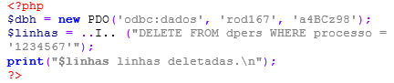

Exercícios Tema 2 -
(UFMT/2021 - Adaptada) O HyperText Markup Language (HTML) é usado para estruturar páginas web. A respeito de HTML, marque V para as afirmativas verdadeiras e F para as falsas.
(INSTITUTO AOCP/2018) Em nosso dia a dia, já é possível perceber que os mais diversos dispositivos móveis chegaram para ficar e já assumiram seu lugar, tornando-se o meio padrão para acesso à web. Como esses dispositivos possuem os mais variados tamanhos de telas, é importante que o desenvolvedor sempre pense no web design responsivo. Para conseguir desenvolver um design responsivo para a web, três tecnologias principais ou modos de aplicar essas tecnologias estão envolvidas. Assinale a alternativa que apresenta essas três tecnologias.
(COPESE/2020 - Adaptada) O modelo cliente X servidor é a base do ambiente web e de suas aplicações. Sobre a arquitetura cliente-servidor, marque a opção CORRETA.
(INSTITUTO AOCP/2018) Existem diversas técnicas utilizadas para se obter um design responsivo de aplicações web e também diversos motivos para que se procure essa responsividade. Um dos pontos principais é que as pessoas já acessam a internet mais em dispositivos móveis do que em computadores desktops e notebooks. Sobre esse design responsivo e as aplicações móveis, assinale a alternativa correta.
Em relação à arquitetura de sistemas multicamadas, considere as assertivas abaixo.
(ESAF/2012 - Adaptada) A popularização dos dispositivos móveis (como tablets e smartphones) está alterando o paradigma de tornar disponíveis as informações na web, o que tem impacto direto nas boas práticas de web design. Sobre esta questão, marque a alternativa correta.
Dentre as alternativas a seguir, assinale a que NÃO se aplica ao conceito de Design Responsivo:
(OBJETIVA/2021) Conforme Bonatti, sobre tecnologias e linguagens utilizadas na construção de websites, numere a 2ª coluna de acordo com a 1ª e, após, assinale a alternativa que apresenta a sequência correta:
- (1) CSS.
- (2) PHP.
- (3) HTML.
- ( ) É uma linguagem de programação open source, que é interpretada pelo servidor, muito utilizada para o desenvolvimento de aplicações voltadas para a internet.
- ( ) Serve para promover o acabamento visual das páginas web. Pode ser compartilhado entre várias páginas, permitindo, assim, uma padronização visual muito simplificada e lógica.
- ( ) É uma linguagem de marcação, que é interpretada pelo browser para dar formatação e posicionamento ao conteúdo do website.
(UNIOESTE/2022 - Adaptada) Com relação às Ferramentas de desenvolvimento Web: CSS, assinale a alternativa que completa a sentença: "A Cascading Style Sheets (CSS) é uma linguagem de folha de estilo criada para ...":
(CEFET-MG/2021 - Adaptada) A comunicação na internet acontece principalmente através do modelo requisição e resposta. Sobre o modelo de rede cliente-servidor, é correto afirmar que:
Exercícios Tema 3 -
(IBADE/2022 - Adaptada) Você foi selecionado pelo seu gestor para trabalhar em um novo projeto de formulários em páginas Web. Sobre uma página HTML, assinale a alternativa que indica para que é utilizada a tag abaixo.
<select></select>
(OBJETIVA/2021 - Adaptada) HTML é uma linguagem de marcação que faz uso de tags para estruturar o seu conteúdo. Em uma página HTML, para que é utilizada a tag abaixo?
(IDECAN/2022 - Adaptada) HyperText Markup Language (HTML) é uma linguagem que nos permite criar conteúdo na web que pode ser renderizado por navegadores como o Google Chrome, Microsoft Edge e o Safari. A respeito dessa linguagem, analise as afirmativas abaixo e marque a alternativa correta.
I. Documentos HTML são formados por marcadores (tags) que são delimitados pelos caracteres "". Além dos marcadores, temos nos documentos HTML os elementos. Eles são formados pelos marcadores que podem possuir atributos, valores e elementos filhos.
II. Os marcadores em HTML são case sensitive.
III. Em sua versão 5, o HTML trouxe uma série de novos marcadores para elementos.
São exemplos destes novos marcadores: , , e
(FGV/2022) Observe o código HTML e JavaScript a seguir:
const tjProcesso = {
ID:"2022.1",
envolvidos: [ "João", "Maria" ]
};
document.getElementById( "Tejota" ).innerHTML = tjProcesso.envolvidos[0];
(UFMT/2022) A coluna da esquerda apresenta elementos presentes no HTML5 e a da direita, a característica de cada um. Numere a coluna da direita de acordo com a da esquerda.

(UFMT/2021 - Adaptada) O HyperText Markup Language (HTML) é usado para estruturar páginas web. A respeito de HTML, marque V para as afirmativas verdadeiras e F para as falsas.
( ) É uma linguagem de programação.
( ) Substitui o uso de código JavaScript.
( ) Utiliza tags para delimitar conteúdo.
( ) Possui diferentes níveis de título.
Assinale a sequência correta.
(FURB/2022) Considere um código HTML 5, o qual está sendo estilizado utilizando CSS 3. Isso posto, você precisa modificar certa propriedade de um grupo de elementos para torná-los animados. Ao encontro disso, do(s) seletor(es) CSS a seguir listado(s), aquele(s) utilizado(s) para especificar um grupo de elementos é/são:
(OBJETIVA/2021 - Adaptada) O objetivo principal de uma linguagem de marcação de hipertexto é o de estruturar o conteúdo de um documento. O trecho HTML a seguir corresponde a:
ul
li Café
li Chá
li Leite
/ul
(FGV/2021) Analise o trecho HTML a seguir.
table
tr th A /th th C /th /tr
tr th B /th th D /th /tr
/table
(OBJETIVA/2021) Conforme Bonatti, sobre tecnologias e linguagens utilizadas na construção de websites, numere a 2ª coluna de acordo com a 1ª e, após, assinale a alternativa que apresenta a sequência correta: (1) CSS. (2) PHP. (3) HTML. ( ) É uma linguagem de programação open source, que é interpretada pelo servidor, muito utilizada para o desenvolvimento de aplicações voltadas para a internet. ( ) Serve para promover o acabamento visual das páginas web. Pode ser compartilhado entre várias páginas, permitindo, assim, uma padronização visual muito simplificada e lógica. ( ) É uma linguagem de marcação, que é interpretada pelo browser para dar formatação e posicionamento ao conteúdo do website.
Exercícios Tema 4 -
A CSS permite alterar o comportamento padrão dos elementos HTML. Nesse sentido, a propriedade responsável por alterar a posição dos elementos é:
(COPEL/2015 - Adaptada) Com a utilização de CSS, podemos manipular as cores dos elementos HTML. Assinale a alternativa que apresenta apenas padrões válidos para a definição de cores em CSS.
No CSS, o seletor que localiza um elemento pelo seu atributo "id" é:
(FURB/2022) É possível personalizar várias características de um texto, utilizando-se das propriedades do CSS. Assim sendo, a propriedade CSS que pode ser utilizada para tornar um texto negrito é:
(AOCP/2013) As regras do CSS podem ser definidas em alguns lugares diferentes em um documento HTML. Assinale a seguir a alternativa que descreve as formas onde podemos aplicar as formatações com CSS.
Em um documento HTML, o lugar correto para se declarar folhas de estilo CSS externas é dentro da seção:
A propriedade e o valor da regra de estilo CSS que estabelecem a distância de 16px entre o conteúdo de um elemento HTML e a sua borda, no contexto do modelo CSS Box, é:
(AOCP/2013 - Adaptada) HTML e CSS podem ser utilizados em conjunto. Qual a responsabilidade dos códigos CSS para uma aplicação web?
(FGV/2021) No contexto da formatação de páginas Web, assinale o papel da propriedade padding no CSS em relação a um box.
A CSS3 tornou possível que novos tipos de fontes sejam usados nas páginas com a utilização da regra @font-face. Sobre o suporte a fontes na CSS3, analise as afirmações abaixo e assinale a alternativa que contém as corretas.
- A regra @font-face permite que fontes de diferentes formatos sejam declaradas, aumentando assim a compatibilidade entre navegadores.
- A regra @font-face permite que novas fontes sejam criadas e utilizadas em páginas. Essa regra informa ao browser o local onde a fonte a ser utilizada se encontra, permitindo ainda que seja verificado se o usuário já possui a fonte em questão.
- A regra @font-face manteve o suporte à declaração font-family. Com isso, é possível indicar uma ou várias fontes alternativas caso a preferencial não esteja disponível.
- A única desvantagem da nova regra, @font-face, é descontinuar as famílias de fontes que não possuíam total suporte pelos navegadores.
Exercícios Tema 5 -
A Web, ou World Wide Web, desempenha um papel essencial na sociedade moderna, trazendo consigo uma série de benefícios e transformações significativas. Sua importância pode ser observada em várias áreas da vida cotidiana, como comunicação, acesso à informação, educação, comércio, entretenimento e participação cívica. Nesse sentido, assinale a opção que completa corretamente as lacunas da sentença abaixo.
A linguagem ________ é essencial na criação de qualquer página para a internet utilizando elementos estáticos. Por sua vez, o ________ proporciona conteúdo dinâmico às páginas, além de viabilizar o acesso a banco de dados.
Numa discussão entre os programadores sobre os conceitos de AJAX (Asynchronous JavaScript and XML), as seguintes afirmações foram feitas:
- ( v ) Permite atualizar dinamicamente o conteúdo, ou partes, de uma página Web.
- ( v ) Embora usado no nome, a utilização da linguagem XML não é obrigatória.
- ( f ) A XMLHttpRequest(XHR) é utilizada para enviar requisições pelo script para o lado client.
Dê valores Verdadeiro (V) ou Falso (F) em cada afirmação e identifique a alternativa que apresenta a sequência correta (de cima para baixo):
(IDECAN/2023) JavaScript é uma linguagem de programação interpretada estruturada de script muito usada para programação FrontEnd. Selecione o método em JavaScript que remove de um vetor o primeiro elemento e o retorna como resultado.
(FAEPESUL/2019) Considerando que a função abaixo foi escrita em JavaScript, qual o número retornado pela execução da função quando o parâmetro “num” tiver valor 15?
(UFRPE/2018) Como resposta a uma requisição AJAX, o script executando no servidor envia para o cliente a cadeia de caracteres seguinte, no formato JSON:
{ "nome":"Rodrigo", "id":8723, "v": [-1,2] }
que é recebida no seguinte campo do objeto XMLHttpRequest, em Javascript:
(VUNESP/2022) Em um programa elaborado em JavaScript, incluiu-se a seguinte estrutura condicional, na qual X e Y representam comandos removidos:
switch (semaforo){
case "verde":
alert("siga")
X
case "amarelo":
alert("atencao")
} X
case "vermelho":
alert("pare")
X
Y:
alert("cor invalida")
}
Os comandos X e Y que devem ser colocados para que a estrutura condicional seja executada adequadamente são, respectivamente,
Com seus scripts, é possível incluir, em uma página estática, elementos dinâmicos como mapas, formulários, operações numéricas, animações, infográficos interativos e muito mais.
Disponível em: https://kenzie.com.br/blog/javascript/. Acesso em: 22 set. 2022. Adaptado.
A respeito da linguagem JavaScript, é correto afirmar que:
(FGV/2022) Analise o código JavaScript a seguir:
const cidades = ["Natal", "Manaus", "Recife", "Brasília"];
cidades.reverse();
alert (cidades);
Assinale o que é exibido na execução do trecho acima.
Analise o seguinte código escrito na linguagem JavaScript:
var frutas = new Array("banana", "laranja", "limão");
frutas.shift();
frutas.splice(1, 1, "uva");
for (var i = 0; i < frutas.length; i++) {
document.write(frutas[i] + " | ");
}
(IDECAN/2023) A linguagem de programação JavaScript permite executar códigos com lógica matemática em navegadores. Selecione a alternativa que mostra a saída do seguinte código JavaScript.
function faz (n) {
var sn.toString();
var variavel = 0;
for (var char of s) {
var d= parseInt(char);
variavel+d;
}
return variavel;
}
var resultado = faz(123123);
console.log("Resultado: ", resultado);
Exercícios Tema 6 -
(FUNDATEC/2021) A partir do código-fonte da Figura abaixo, escrito na linguagem PHP (versão 7.4), o que deverá ser impresso?
<?php
for ($num1 = 1; $num1 <= 9; $num1++) {
for ($num2 = 1; $num2 <= 10; $num2++) {
echo "$num1 * $num2 = " . $num1 * $num2;
echo "<br>";
}
echo "<br>";
}
?>
(FGV/2022 - Adaptada) PHP é uma linguagem server side, gratuita e multiplataforma. Numa página web, um script PHP deve ser localizado entre as tags:
(IDECAN/2021 - Adaptada) PHP é uma tecnologia que disponibiliza um comando para uso nas estruturas foreach, while, do-while ou switch. No seu funcionamento, ao ser detectado entre os comandos inseridos em um loop, faz com que ocorra o término imediato da execução do loop. Esse comando é conhecido por:
Qual instrução apresenta o conteúdo do primeiro elemento do vetor ou array declarado em PHP na forma: $estados = array("AM", "AP", "DF", "PR", "SP","SC", "RS"); ?
(VUNESP/2020) Analise o trecho de código PHP a seguir.
?php
$x = 10;
if( $x == '10' ) {
echo "SIM";
} else {
echo "NÃO";
}
?
(FUNRIO/2018) A figura abaixo ilustra uma sequência de instruções em PHP.
?php
$x = 10;
$y = 19;
$z = 28;
echo ++$x;
echo $y++;
echo --$z;
?
(UNIOESTE/2022 - Adaptada) Com relação ao PHP (Hypertext Preprocessor), há um comando para criar um conjunto (array) ou vetor associativo. Indique a alternativa que contém o uso correto desse comando.
$cadastro = array( ''CPF''=>''1234567890'',''Nome''=>''Pedro'',''Cidade''=>''Cascavel'' );
Analise o código PHP a seguir:
?php
$x = 3;
$y = $x * 3;
$z = 4 * $x / $y;
echo $x + $y * $z;
?
(NC-UFPR/2019) Qual instrução apresenta o conteúdo do primeiro elemento do vetor ou array declarado em PHP na forma:
$estados = array("AM", "AP", "DF", "PR", "SP","SC", "RS");
Exercícios Tema 6 -
(IFB - 2017 - IFB - Professor - Informática/ Desenvolvimento de Sistemas)
Segundo Beighley e Morrison (2010), quando um formulário HTML envia dados a um script PHP, utiliza-se um conjunto de variáveis superglobais (superglobais são variáveis pré-definidas pelo interpretador PHP e que estão sempre disponíveis em todos os escopos) para acessar os dados enviados pelo formulário HTML. Assinale a alternativa que apresenta os identificadores/nomes de variáveis superglobais corretos para a tarefa de acessar dados enviados por um formulário HTML:
(Colégio Pedro II - 2016 - Colégio Pedro II - Professor - Ciência da Computação)
O código de PHP abaixo insere dados em um banco de dados local MySQL, cujo usuário é root; a senha é mypsw e o nome do banco de dados, bdConcurso.

(FCC - 2017 - DPE-RS - Analista - Desenvolvimento de Sistemas)
Considere o fragmento de código abaixo, em um ambiente PHP em condições ideais.
Para que o comando DELETE possa ser executado corretamente, a lacuna I deve ser preenchida com:
(FADESP - 2017 - COSANPA - Analista de Sistema)
A implementação correta de uma classe chamada Usuário em PHP é:
?php
class Usuario
{
var $nome; var $cpf;
public function _contruct($nome, $cpf){
$this->nome = $nome;
$this->cpf = $cpf;
}
}
?
(FCC - 2013 - AL-RN - Técnico Legislativo - Programador)
Para receber, em um arquivo PHP no servidor, os valores enviados em campos texto de um formulário HTML, utilizam-se variáveis predefinidas. Se o elemento form do formulário contiver method="get", a variável utilizada será ..I.. . Caso contenha method="post", a variável utilizada será ..II.. . Pode-se também utilizar a variável ..III.. que recebe os valores tanto se method="get" quanto se method="post".
As lacunas I, II e III da frase acima são preenchidas, correta e respectivamente, com: